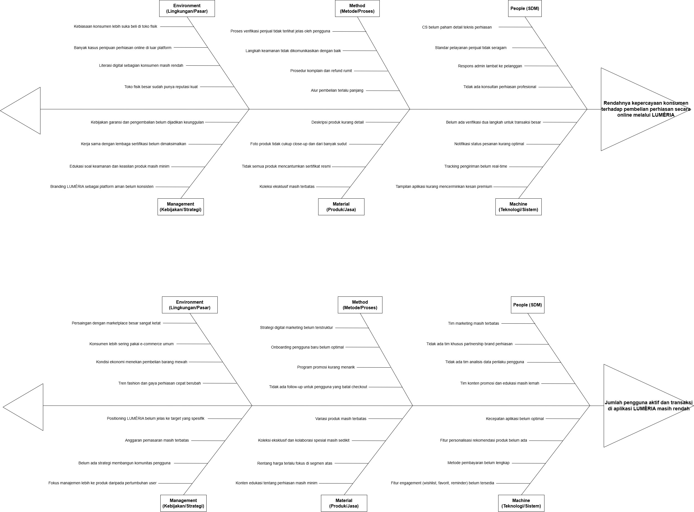
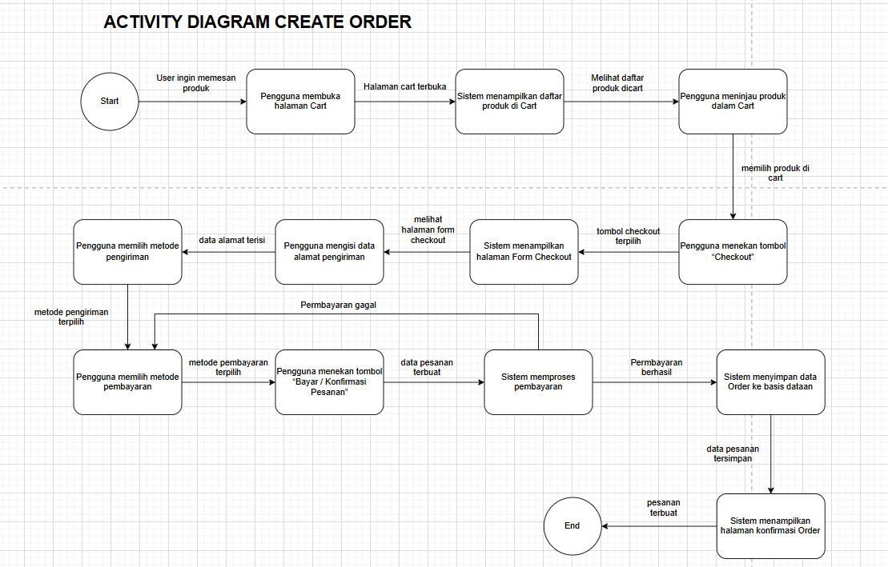
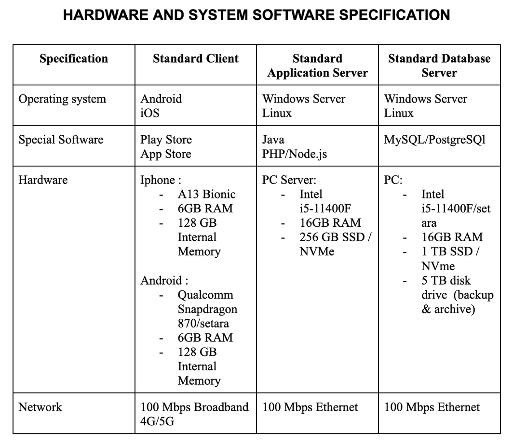

PROJECT 06 / SYSTEM ANALYSIS & DESIGN
LUMERIA System Analysis & Design
Designing a premium jewelry marketplace concept through business analysis, process modeling, system requirements, and client/server architecture planning.
01 / OVERVIEW
A premium marketplace for jewelry.
LUMERIA is a proposed niche jewelry marketplace designed to connect local and international jewelry brands with consumers. The concept emphasizes curated products, authenticity, transparent product information, jewelry customization, and a premium shopping experience.
This academic project translates the business concept into process models, use cases, system behavior diagrams, risk considerations, and a proposed client/server design.
02 / PROBLEM ANALYSIS
Understanding barriers to trust and engagement.
The project examined two proposed business challenges: low consumer trust in buying jewelry online and low potential user activity and transaction volume.
Fishbone diagrams were used to organize contributing factors related to people, processes, products, management, technology, and market conditions.

03 / SYSTEM REQUIREMENTS
Mapping customer and admin interactions.
The use case modeling identifies the system interactions needed for customers to explore and order jewelry, and for administrators to manage catalogs and transaction records.
- Customer registration and account creation.
- Viewing jewelry product details and placing orders.
- Submitting reviews for completed orders.
- Adding jewelry products to the catalog.
- Generating monthly jewelry sales reports.
- Creating and approving transaction receipts.
The report documents use case scenarios, actors, preconditions, postconditions, process steps, and exception conditions.
04 / PROCESS MODELING
Designing the order journey.
Activity, sequence, and state transition diagrams were prepared to describe how users and the proposed system would interact during registration, product browsing, ordering, stock updates, reviews, and receipt generation.

The designed checkout flow covers cart review, delivery details, payment selection, order processing, and confirmation.
05 / SYSTEM ARCHITECTURE
Separating client, application, and data layers.
The proposed system uses a client/server architecture that separates customer-facing interfaces, business logic, and centralized data storage.
Android & iOS Interfaces
Orders, Pricing & Payments
Products, Customers & Transactions
The project also proposes server and device specifications, including possible application technologies and relational database options. These specifications are design proposals, not a deployed system stack.

06 / RISK ASSESSMENT
Considering reliability, security, and trust.
The risk assessment identifies potential issues in authentication, personal data protection, product information, pricing, payment processing, inventory, and external API or logistics integrations.
Proposed mitigation approaches include two-factor authentication, encryption, input validation, transaction monitoring, backup procedures, and clearer product verification processes.
07 / PROJECT OUTCOME
Turning a business concept into a system blueprint.
The project produced a structured system design proposal that connects business challenges with user requirements, workflow diagrams, architecture planning, and risk management.
It strengthened my understanding of business process analysis, use case documentation, system modeling, and designing solutions around user and organizational needs.
Academic system design concept. The report does not document a production deployment or measured post-launch outcomes.